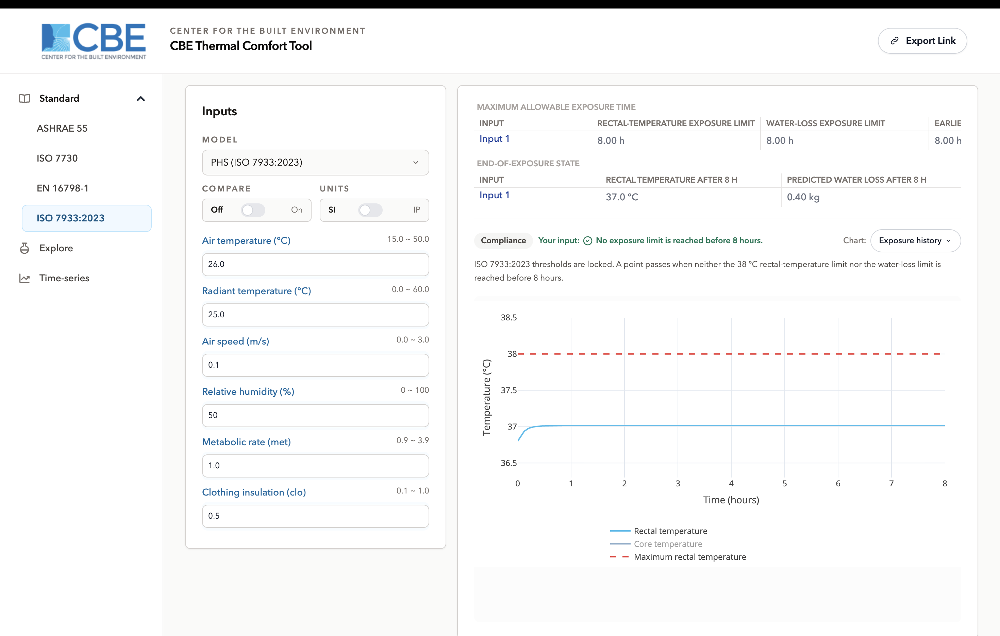

ISO 7933:2023 Predicted Heat Strain
/standard/iso-7933/1 modelSharing enabled
Overview
ISO 7933 provides a methodology for calculating the sweat rate and the core temperature the human body develops in response to hot working conditions. The two goals of the analysis are:
- assessment of the risk of thermal stress to the worker;
- determination of the maximum permitted exposure times.
This is not a comfort assessment. A comfort model reports how warm people feel; Predicted Heat Strain reports how long they can remain before core temperature or dehydration reaches a limit.
/standard/iso-7933/, and an
optional model segment selects the model directly /standard/iso-7933/phs-2023/.
Primary interface components
Navigation and model selection
The workspace carries one model, PHS (ISO 7933:2023), selected by default.
Input section
Six inputs describe the environment and the work: air temperature, mean radiant temperature, air speed, relative humidity, metabolic rate and clothing insulation. The Compare and Units toggles and the Share button work as on the other workspaces.
The simulation also uses body weight and height. The tool supplies standard default values for these, so an ordinary assessment does not require them.
Results display
The tool reports the maximum allowable exposure time, together with the values that determine it:
| Output | Meaning |
|---|---|
| Limiting exposure time | How long a worker can remain in these conditions before a limit is reached. |
| Rectal temperature | Predicted core temperature at the end of the assessed exposure. |
| Predicted water loss | Cumulative sweat loss over the exposure, in grams. |
| Limiting criterion | Which of the two limits core temperature or water loss was reached first. |
Visualization charts
| Chart | Shows |
|---|---|
| Body temperature | Predicted core temperature over the exposure, against its limit. |
| Dynamic | A banded field over two quantities you choose, coloured by the selected output. |
The chart menu also carries the export options. In the Time-series workspace a water-loss chart is added, since cumulative loss over a built scenario is the second thing a heat-strain assessment turns on.
Assessment method
The model simulates the body's heat balance minute by minute over the exposure and watches two limits: a core temperature of 38 °C, and a water loss expressed as a fraction of body mass. Whichever is reached first ends the permitted exposure, and the tool names it.
The water-loss limit depends on whether workers can drink during the exposure free access to water permits a larger loss than none and a result states which assumption it used.
On this workspace the assessment is made over a standard eight-hour working exposure. A limiting exposure time of eight hours or more means a full shift can be worked in these conditions; anything less is the safe duration.
Model applicability limits
The model is validated for working conditions, not for cold rooms or heavy protective ensembles, and the ranges are correspondingly narrow. A value outside them is marked and not calculated.
| Input | Accepted range |
|---|---|
| Air temperature | 15 to 50 °C |
| Mean radiant temperature | 0 to 60 °C |
| Air speed | 0 to 3 m/s |
| Relative humidity | 0 to 100 % |
| Metabolic rate | 0.9 to 3.9 met |
| Clothing insulation | 0.1 to 1 clo |
Additional capabilities
Time-series. PHS is the only model that supports the Time-series workspace, where a shift is described as a sequence of segments and simulated straight through. Use it when the exposure is not constant a rest break, a change of task, a hotter afternoon.
Explore. In Explore, PHS can colour a field by any of three outputs: limiting exposure time, rectal temperature after eight hours, or predicted water loss after eight hours. The quickest way to see what a change in air speed buys across a range of temperatures.
Compare. Up to three sets of inputs at once, for comparing two work rates or two clothing ensembles side by side.
Unit selection. SI and Inch-Pound, held internally in SI.
Sharing. The link button encodes the current inputs and chart selection. Note that sharing is not available in Time-series, where a link cannot represent a multi-segment scenario.
References
- [1] ISO 7933:2023, Ergonomics of the thermal environment Analytical determination and interpretation of heat stress using calculation of the predicted heat strain.
- [2] Malchaire, J. et al. (2001). Development and validation of the predicted heat strain model.